Префектура Тотиги · Кинугава · рёкан и ремёсла
«KAI Кинугава»: онсэн-рёкан, где ремёсла Тотиги можно потрогать руками
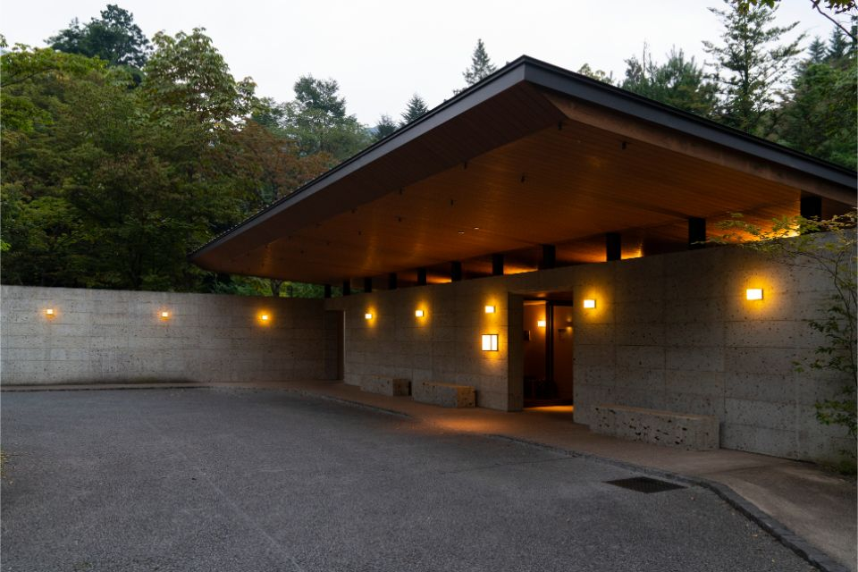
Онсэн Кинугава, один из самых известных курортов Канто, лежит в долине горной реки. На холме над ней стоит «KAI Кинугава», рёкан, который можно назвать музеем народных ремёсел Тотиги: от занавеси у входа до тарелки за ужином.
Дорога
Холм над рекой
От станции Кинугава-онсэн до рёкана около пяти минут на машине. Частная дорога упирается в холм, у подножия стоит здание из камня оя, а наверх, к самому рёкану, поднимает фуникулёр-вагончик. Короткий подъём над лесом работает как переход в другой мир: в холле гостя встречает вид на внутренний сад. Осенью 2019 года, когда здесь гостил директор токийской галереи и магазина предметов ремесла, сад стоял в красной листве.
«Вокруг лес, и настроение сразу переключается с будней на что-то совсем другое»
гость рёкана, директор галереи ремёсел
«KAI» это сеть онсэн-рёканов Hoshino Resorts, где каждый дом рассказывает о своей местности. Дом в Кинугаве посвящён мингэй, народным ремёслам Тотиги. Их здесь четыре. Камень оя, пористый туф из каменоломен префектуры, ценил американский архитектор Фрэнк Ллойд Райт (1867–1959). Решётки «Канума-кумико» собирают из тонких деревянных планок без единого гвоздя. Керамику Масико прославил гончар Сёдзи Хамада (1894–1978): вместе с философом Мунэёси Янаги (1889–1961) и гончаром Кандзиро Каваи (1890–1966) он стоял у истоков движения мингэй и был признан живым национальным сокровищем. И самое редкое из четырёх ремёсел: индиго Куробанэ.
Номера
Комнаты мингэй
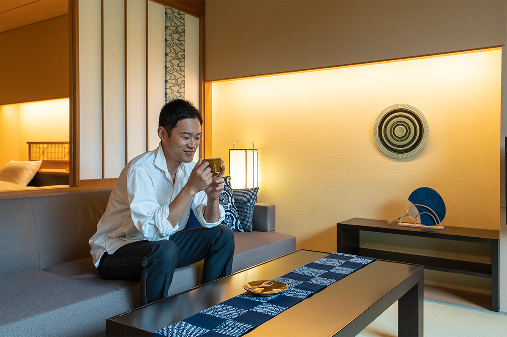
Все номера рёкана оформлены как «комнаты мингэй Тотиги». В 2022 году рёкан навестил исследователь старинной одежды, который разбирает вековые наряды по швам и показывает их устройство на выставках. Ещё у входа он потрогал синюю занавесь норэн, окрашенную новой техникой «фури», а в номере первым делом заметил подушки и вставки в сёдзи из ткани с трафаретным узором.
«Пахнет индиго. На Западе индиго обычно красят лён и прокатывают его валиком под давлением, поэтому фактура получается блестящей»
исследователь старинной одежды
С индиго Куробанэ гость встретился впервые, а на следующий день его ждала встреча с последним мастером этого ремесла.
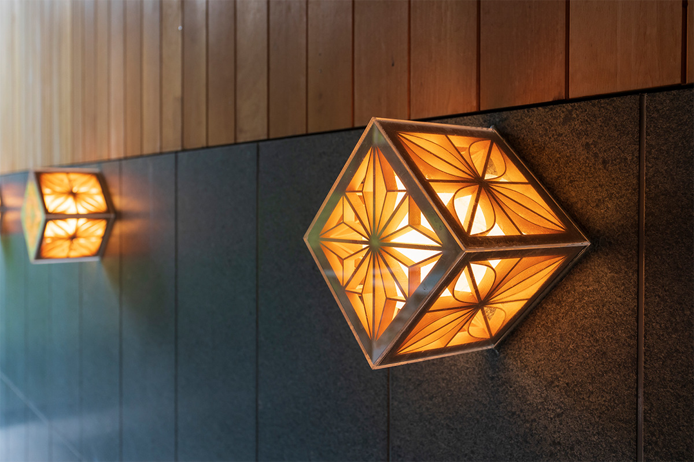
Специальных занятий в рёкане сознательно не устраивали: гость сам решает, читать ли в лаунже или искать по дому предметы ремесла. Но для тех, кто хочет посидеть в номере, в 2022 году был набор, чтобы сделать открытку из лоскутов индиго. А осенью 2019 года в саду ставили котацу, столик с обогревом, укрытый одеялом индиго Куробанэ.
«Котацу в саду меня удивил, но как только я сунул ноги под одеяло, растаял и будто слился с лесом»
директор галереи ремёсел, 2019 год
Онсэн
Купальни, фонари и веера
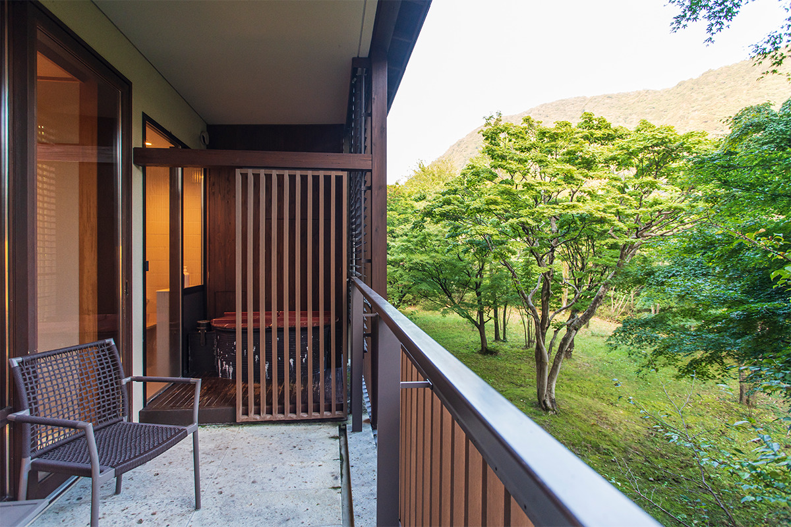
С давних времён в этих краях говорили: «Раны лечат в Кавадзи, ожоги в Таки», то есть в Кинугаве, и оба онсэна были известны как места лечения водами. Вода здесь щелочная, мягкая для тела, и в ней трудно перегреться, поэтому купаться советуют несколько раз, утром и вечером. Она чистая и нежная, а большая купальня застеклена, так что сидишь в воде будто посреди леса. К ней ведёт галерея вокруг сада, и вечером её освещают фонари, где керамика Масико соединена с тканью индиго. Говорят, индиго к тому же отпугивает насекомых: польза и красота вместе, в духе мингэй.
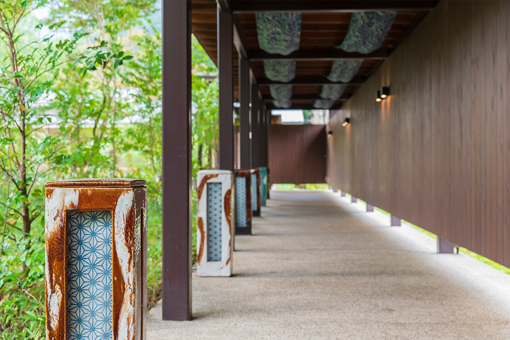
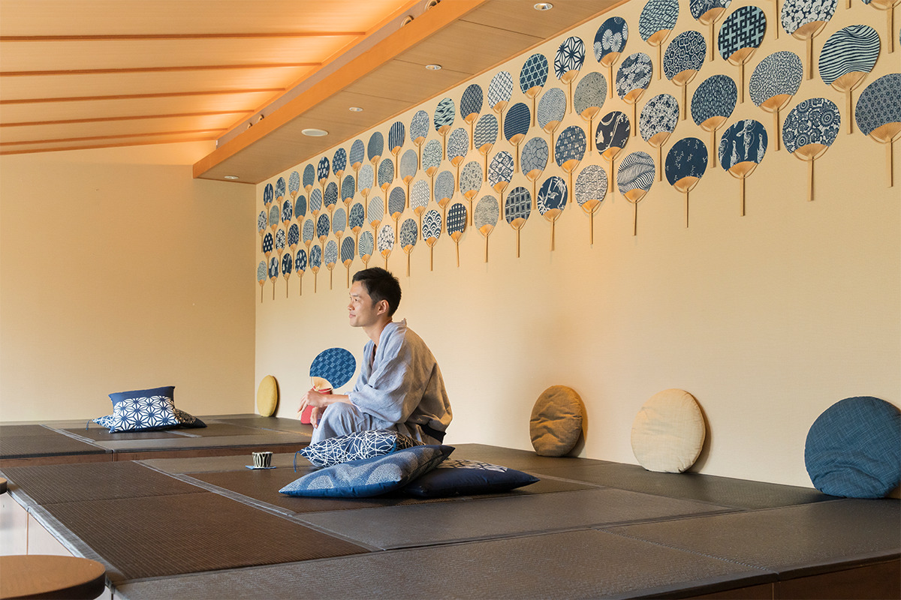
Предметы ремесла спрятаны по всему дому, и их интересно искать. Из керамики Масико сделан суйкинкуцу, «пещера поющей воды»: капли падают в закопанный сосуд, и он отвечает тёплым звоном. Камень оя добыт в префектуре, поэтому его простая фактура легко вписывается в природу Кинугавы, загородного курорта токийцев. В сёдзи вставлены кусочки ткани индиго, и исследователь одежды назвал эту идею очень любопытной. А в зале отдыха в 2019 году лежали ароматические камни из оя, и перед купанием там удобно было сделать растяжку.
Ужин
Ремёсла на тарелке
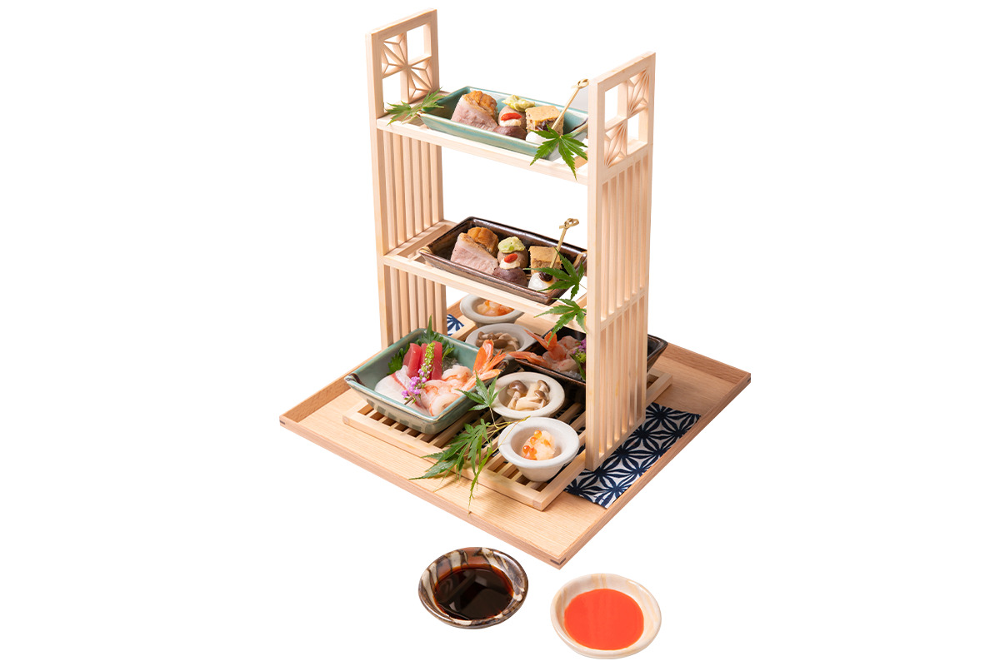
Ужин кайсэки подают на посуде мастеров Масико, в том числе гончара, который особенно силён в глазурях. В меню осени 2022 года были тартар из говядины с маринованным луком ракке под заправкой из клубники «Тотиотомэ», суп с рыбой амадай и креветкой, рис с осенним тайем и мацутакэ в глиняном горшке, похожем на тажин. Главное блюдо «Санкай рюдзин-набэ» (в 2019 году в котелок клали, например, лангуста исэ-эби) доводят до готовности камнями, раскалёнными примерно до 800 °C: пар над котелком изображает дракона из легенд Тотиги. На десерт подавали желе на соевом молоке с юдзу, а сверху компот из канпё, сушёной стружки тыквы-горлянки, которой славится префектура.
Утром на стол ставят местный завтрак: сок из юдзу, натто из сои префектуры с ячменём, юбу и симоцукарэ, старинное блюдо Тотиги из овощей и рыбы.
У исследователя одежды с керамикой особые отношения. Он не считает себя знатоком, но книгу Сёдзи Хамады «Мудзиндзо» прочитал до дыр: у него пять экземпляров. Хамада вспоминает в ней, как ему говорили, что покрыть сосуд глазурью дело пятнадцати секунд, а он отвечал: пятнадцати секунд и шестидесяти лет.
Вечер
«Ночь керамики Масико»
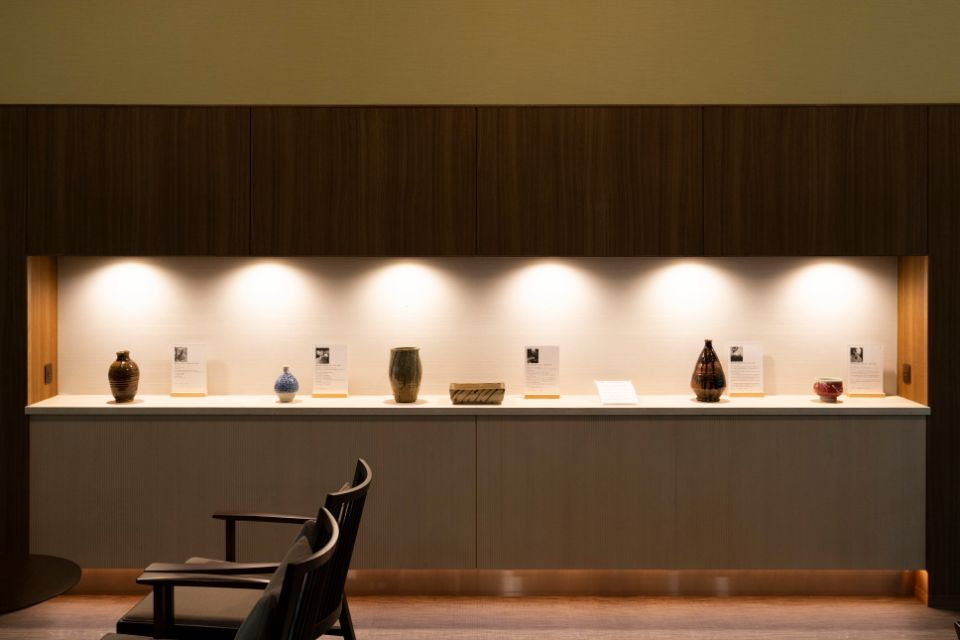
После ужина в лаунже проходит «Ночь керамики Масико». Сотрудник рёкана рассказывает историю керамики Масико и объясняет, чем она отличается от посуды других областей. В галерее собрано около 300 маленьких тарелочек мамэдзара со всей Японии: каждый гость выбирает три и раскладывает на них сладости. Исследователь одежды выбирал наугад, и все три тарелки оказались из Масико. О городе гончаров подробнее в статье о Масико.
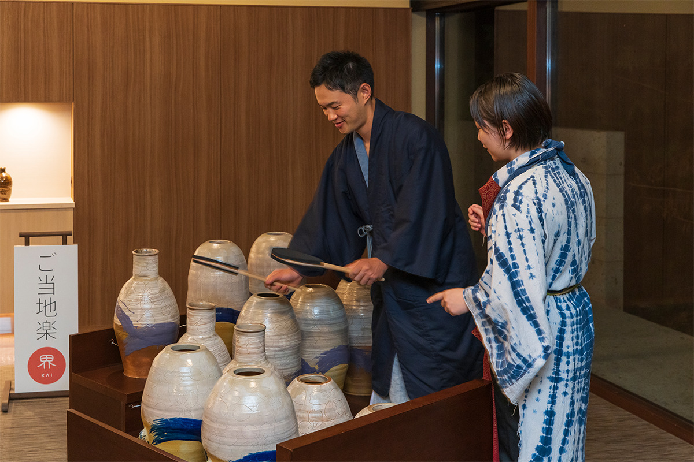
В 2019 году концерт начинался в 21:00. А в магазине рёкана продавали в том числе палочки для еды из Масико, такие же, как за ужином.
«Я весь концерт мечтал постучать по этому барабану»
исследователь старинной одежды
В 2026 году «Ночь керамики Масико» по-прежнему проходит каждый вечер, бесплатно и без записи.
KAI Kinugawa
- Адрес
- префектура Тотиги, Никко, Кинугава-онсэн Таки, 308
- Телефон
- +81 50-3134-8092 (9:30–18:00)
- Номера
- 48
- Цены / Вход
- от 31 000 иен на человека с ужином и завтраком, с налогом и сервисным сбором (2022)
- Заезд / выезд
- 15:00 / 12:00
- Как добраться
- от станции Кинугава-онсэн линии Тобу около 5 минут на машине; от развязки Имаити дороги Никко-Уцуномия около 30 минут
Мастерская
Индиго Куробанэ: двести лет в одних руках
Наутро исследователь одежды отправился в город Отавара, на север префектуры. Когда-то в Куробанэ работали пять красилен, а осталась одна: «Куробанэ айдзомэ конъя», которую ведёт мастер восьмого поколения Юта Онума. От закрывшихся соседей ему перешли 6000 трафаретов, и техникой, которой больше двухсот лет, он владеет один.
«Спрос на рабочие куртки упал, и многие красильни закрылись. Мы выжили, потому что шли за временем: отец делал вещи на подарки, а я делаю то, что нравится моим ровесникам»
Юта Онума, мастер индиго
Глубокий синий цвет индиго Куробанэ получается благодаря предварительной окраске «гоирэ». Исследователь одежды сравнил этот труд с тем, что он находит в старинных платьях.
«Когда разбираешь платье эпохи рококо, видишь работу, какую сегодня и представить нельзя: шей или умри»
исследователь старинной одежды
В мастерской гость прорезал трафарет, выбрав из 15 образцов самый мелкий узор со стрекозами. Затем на трафарет наносят клейстер из клейкой рисовой муки и отрубей: от того, как ляжет этот слой, зависит узор.
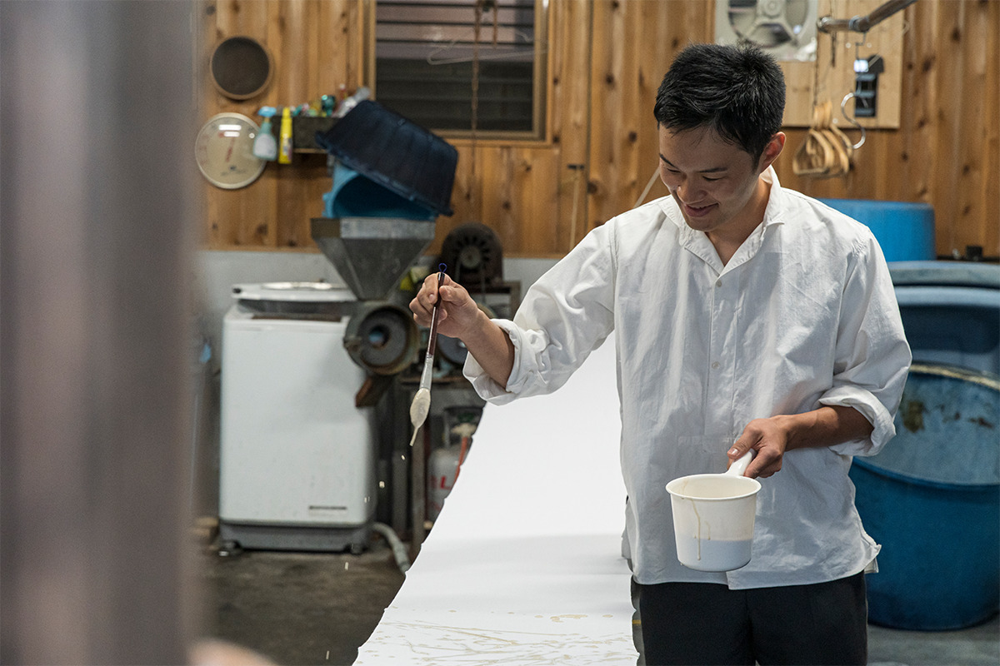
Обычно гости смотрят, как красит сам мастер, но в 2022 году исследователю одежды разрешили опустить ткань в чан. Красильня с алтарём ками считается священным местом, а чанам больше двухсот лет. На воздухе краска меняет цвет на глазах, и ткань постепенно уходит в синеву.
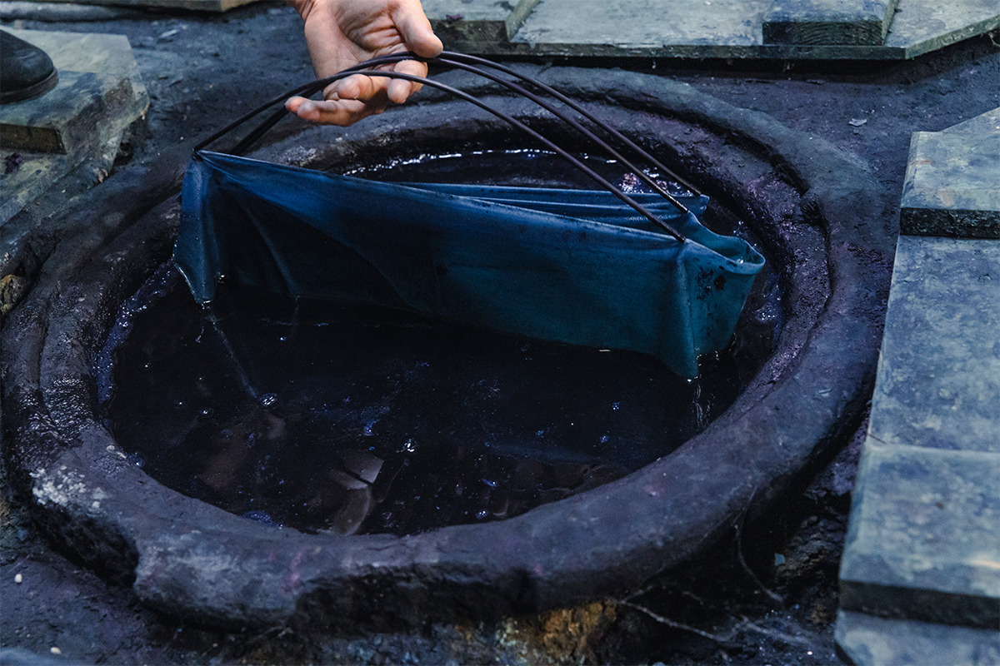
При мастерской есть магазин. В нём кеды, маски и другие вещи, которые охотно берут молодые, и у многих по нескольку вариантов узора. Исследователь одежды купил ткань: из неё он задумал сшить ридикюль, дамскую сумочку XVIII–XIX веков.
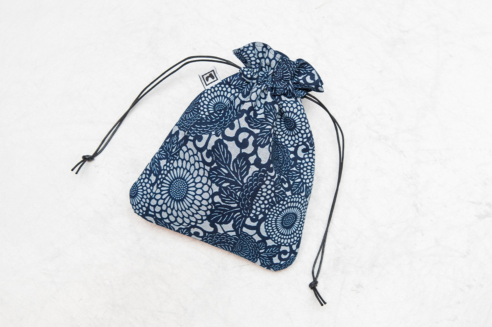
В 2026 году рёкан предлагает гостям экскурсию в мастерскую с Ютой Онумой: в первый и третий вторник месяца (кроме декабря), до февраля 2027 года, на следующий день после заезда с 13:00 до 15:00. Записываться нужно за неделю, в группе от 2 до 6 человек, стоимость 11 000 иен на человека с налогом, сумка из индиго входит в цену.
«Куробанэ айдзомэ конъя»
- Адрес
- префектура Тотиги, Отавара, Куробанэ-Мукаимати, 88
Фото: Кадзуя Хаяси, Ацуси Ямахира.